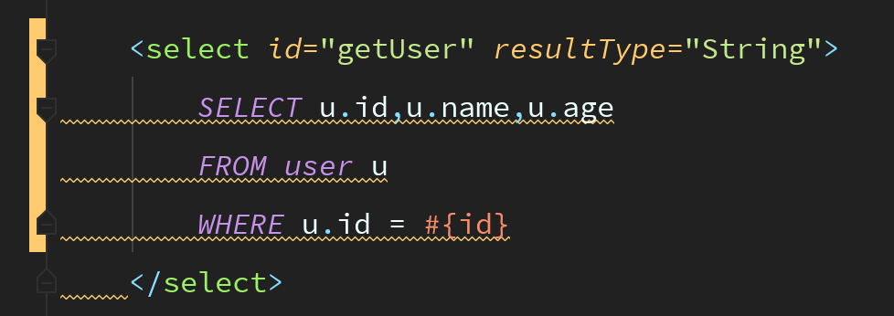
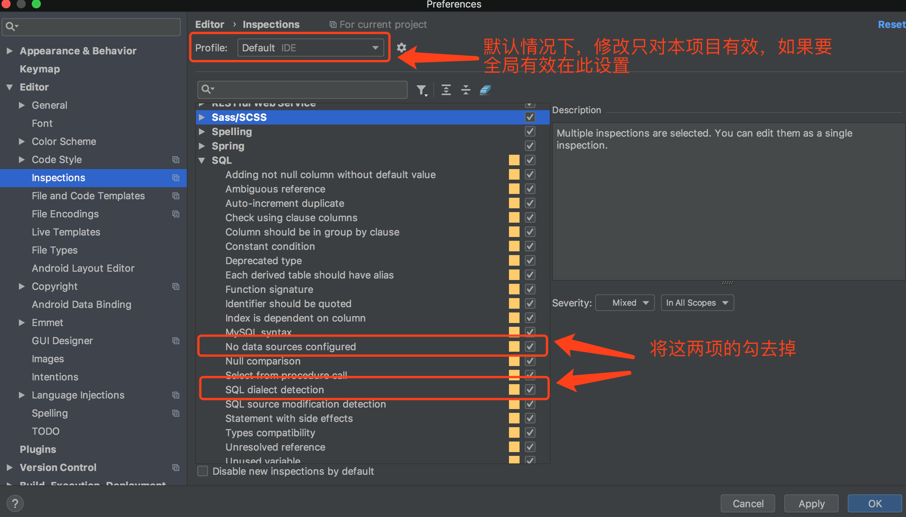
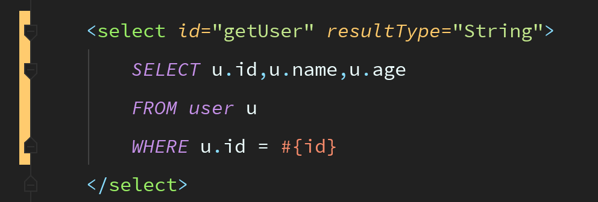

IDEA 常见问题
最近更新：2018-8-31 11:06
本篇文章介绍在使用IDEA过程中遇到的一些问题及其解决方法
一、Mybatis配置文件中SQL语句的波浪线问题
问题描述
在XXXMapper.xml文件中，SQL语句总是出现很多波浪线，很碍眼，如图：

解决方案
打开设置，如下图：

效果
修改后的效果如下图：

二、Maven项目找不到类
问题描述
- 场景：由于要开发功能fun这个需求，然后从远程仓库master中拉取了最新的代码到本地分支fun。
这是fun的代码与master是相同的，项目中依赖于公司其他的项目模块libA。此时项目是正常运行的 - 问题：在代码开发一段时间后，需要同步master的代码到本地以便继续开发，此时master的代码是有更新的，具体是，master分支的代码上依赖的libA也更新了，并增加了一个类，例如User，然后master上的代码使用了这个类，值得一提的是由于libA的代码还未开发完整，所以版本号没有更新，所以master上对libA的依赖的版本号也是不变（这里master能够用User，估计也是使用了下面介绍的方法的）。
所以现在fun分支上的代码已经同步到master的最新代码，这时候就有问题了，fun分支上会报找不到User的错 ，这是为什么？
以为libA的版本号没有更新，所以fun上的代码并不会去更新libA的最新依赖，所以fun本地上的代码确实是找不到User这个类的，你会发现无论如何Build Project都没用，刷新Maven也没有用，因为libA的版本号没有更新，所以Maven仓库不会下载最新的libA
解决方案
如何解决？通过手动使用命令行解决，在终端执行如下命令（确保在项目跟目录下）1
mvn clean package